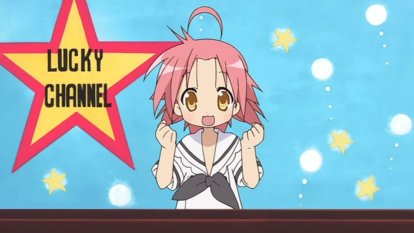

Présentatrice : Akira
Akira a des cheveux courts rose saumon, un ahoge sur le côté droit de la tête et des yeux jaune doré. Comme Konata Izumi, Akira a la lèvre fendue. Ses bras sont si courts que les manches de son uniforme scolaire d'hiver couvrent facilement ses mains. Comme la plupart des personnages de « Lucky Star », elle a une frange et des cheveux en désordre.